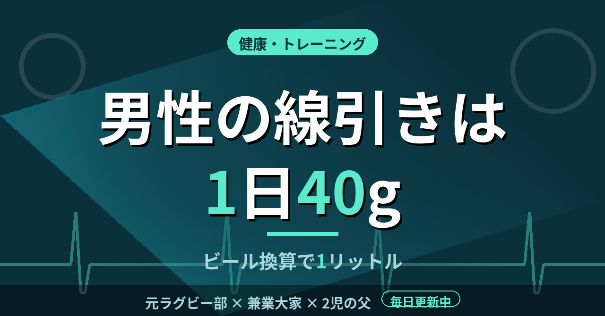

健康・トレーニングビール500mlは純アルコール20g。男性の線引きは40g、つまり1日1リットル
サプリの飲みすぎで、肝臓の数値を悪くしたことがある。それ以来、体に入れるものは「量」で考えるべきだと思うようになった。酒についても、国がどんな基準を示しているのかを調べてみた。
酒は「純アルコール量」で数える
厚生労働省のリーフレットによると、酒の量は純アルコール量（g）で捉える。計算式は「お酒の量（ml）×アルコール度数÷100×0.8」で、0.8はアルコールの比重だ。ビール500ml、度数5％なら、500×0.05×0.8で20gになる。
同じ20gに当たる量は、度数によってずいぶん違う。日本酒15％なら180ml、ワイン14％なら約180ml、焼酎25％なら約110ml、ウイスキー43％なら60ml、缶チューハイ7％なら約350mlだ。350mlの缶が小さく見えても、度数が7％あれば、ビール500mlと同じ20gが入っている。
式に当てはめると、度数の高い缶の怖さが見えてくる。度数9％の缶チューハイを500ml飲めば、500×0.09×0.8で36gだ。1本でほぼ40gに届く。ラベルの度数とml数を見て、一度だけ電卓を叩いてみると、感覚との差に気づく。
もうひとつ押さえておきたいのは、この20gが「1合」の目安とされていることだ。日本酒の1合は180mlなので、ビール500mlと同じ量だと分かる。普段飲む酒の度数とサイズを確かめて、自分で計算してみるのが、いちばん早い。
男性40g、女性20gが「リスクを高める量」
同じリーフレットでは、生活習慣病のリスクを高める飲酒量を、1日あたりの平均純アルコール摂取量で男性40g以上、女性20g以上としている。ビールに直すと、男性は1日1リットル、女性は500mlだ。
国民健康・栄養調査（令和6年）では、この「生活習慣病のリスクを高める量」を飲酒している人の割合は、全体で11.4％、男性で13.9％、女性で9.3％だった。男性の7人に1人が、この線を超えていることになる。
数字にすると、境界線は近い
7％の缶チューハイを350ml飲めば20g、2本で40gになる。ビールの中ジョッキ2杯でも、ほぼ同じだ。1日に2本、2杯という量は、特別な大酒飲みの量とは感じにくい。だからこそ、本数やジョッキの数ではなく、グラムで見る意味がある。
社会人になってからは、取引先とゴルフに行き、そのあとに食事の席が続くことがある。ラウンドで体を動かした日は喉が渇き、ビールが進みやすい。そういう日こそ、1杯が何gなのかを頭の片隅に置いておくと、飲む量を自分で決めやすい。
肝臓は痛みを出しにくい臓器だと言われる。僕が数値の悪化に気づいたのも、自覚症状ではなく検査の結果を見たときだった。自覚が薄いからこそ、感覚ではなく、数字で量を把握しておく価値があると思っている。
ただし、これはあくまで国が示す目安だ。体質や持病、年齢によって適量は変わるし、飲まない人に勧めるものでもない。僕が確認したのは、自分が口にする量を、いつも感覚だけで決めていたということだった。
サプリで数値を悪くした経験から言えるのは、体に入れる量は数えてから決める、ということだ。
この記事は note にも掲載しています。